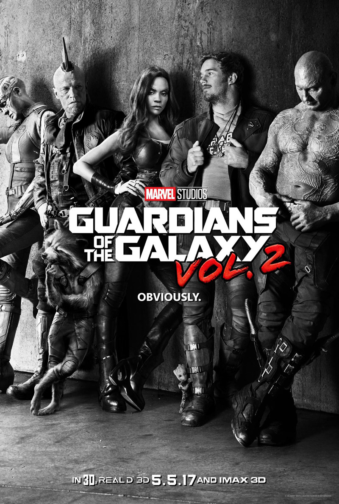
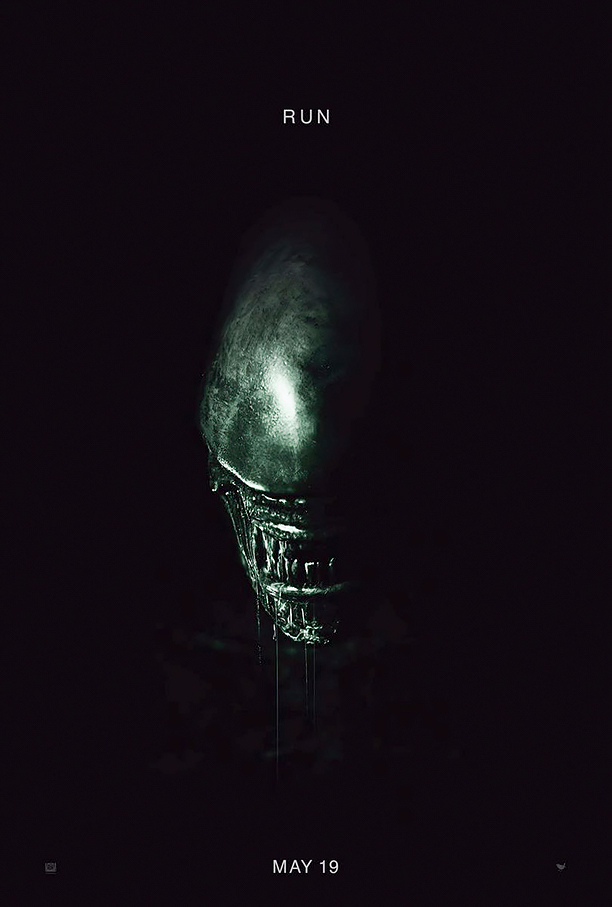

A long time ago in a galaxy far, far away... Yes, folks! Star Wars: The Last Jedi hits the big screen this coming December. Several fan theories surround the movie, so avoid Star Wars related channels on YouTube to avoid misinformation.
Several fans speculate what Luke's first words will be when he speaks for the first time on screen. Personally, I hope it's a Dr. Phil reference like, "Cash me outside! How about dat?"
Whatever the line is, fans are excited to see the progression of the Skywalker storyline. After seeing Rogue One, I believe there is a new hope for the franchise.
An official trailer has not been released as of the day this review was created. Please enjoy a story from IGN about Episode 8 below!

Guardians of the Galaxy Vol. 2
Star Lord and friends are back for this action-packed sequel to Guardians of the Galaxy! The addition of Kurt Russell and Nathan Fillion (and Sylvester Stallone??) should prove to give this money
monster more star power (no pun intended). Nebula is one of my favorite characters from the first movie. It appears that Nebula will join the Guardians in some fashion. With the success of the
original movie, I would place my money that the sequel should prove to be a good movie, likewise.
Hold onto your seatbelts and watch the second trailer to Gaurdians Vol 2 coming to theaters May 5th!

Alien: Covenant
The Alien franchise has had its share of ups and downs. Several fans were upset by Prometheus because it is supposed to be a
tie-in to the Alien series. It is a movie about the evolutionary process of the xenomorph. Alien: Covenant looks to be the film fans have been waiting for. I am not a fan of big blockbuster
franchises giving away too many secrets in the trailer. However, Alien fans will rejoice with the latest trailer (shown below). There are different types of Aliens that beg the question
"how did all of this happen and who is responsible?" I will be watching this movie on its release date of May 19th with several of my friends that are excited to see the new installment
in the franchise.